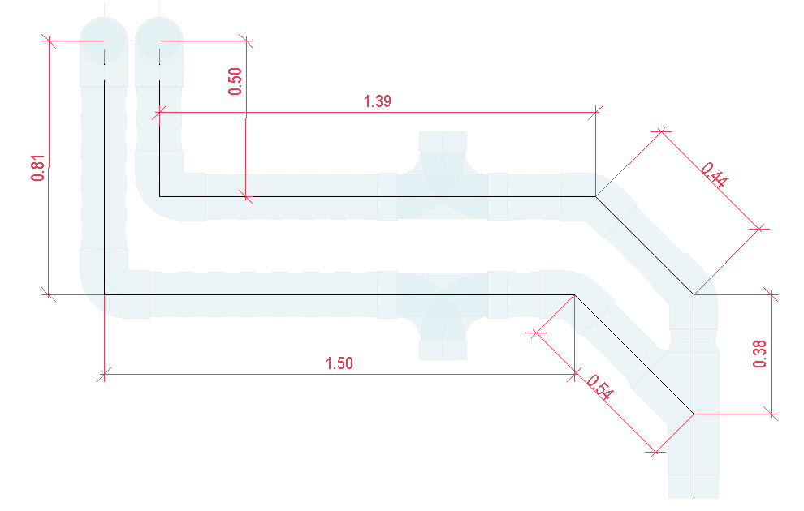

Measure the length of the pipes added to the length of the fittings, in meters, as illustrated in Figure 12.
 Figure 12 - Fittings Length Method.
This measurement methodology results in a more accurate estimate of the total network length compared to ratio methodology, considering that the length of the fittings is directly obtained from the models.
Technical Requirement: Independently of the employed authoring tool, the length of the fittings must be reported through a parameter that calculates it based on the specific dimensions of each element.
As a result, this technique is applied during the Estimate and Design project phases.
Risk: However, it is crucial to consider the inherent risks associated with this approach, particularly when the design demands fittings with big dimensions or special features, as it may have implications on cost estimation.